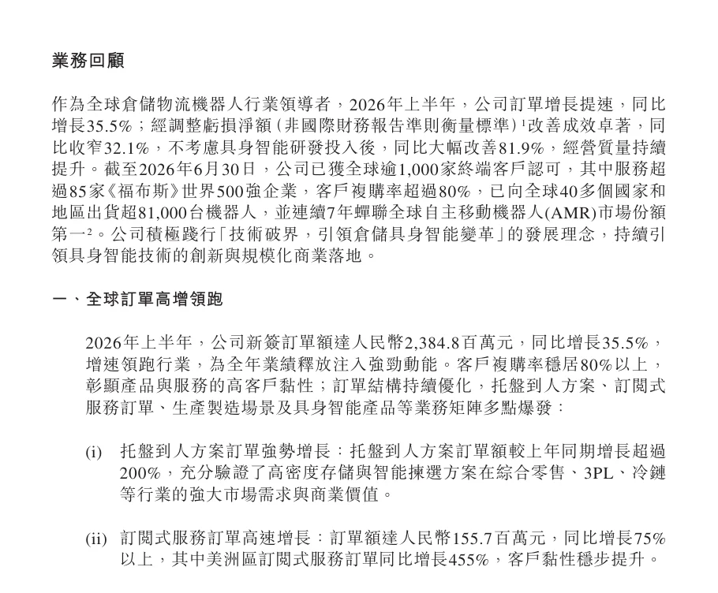
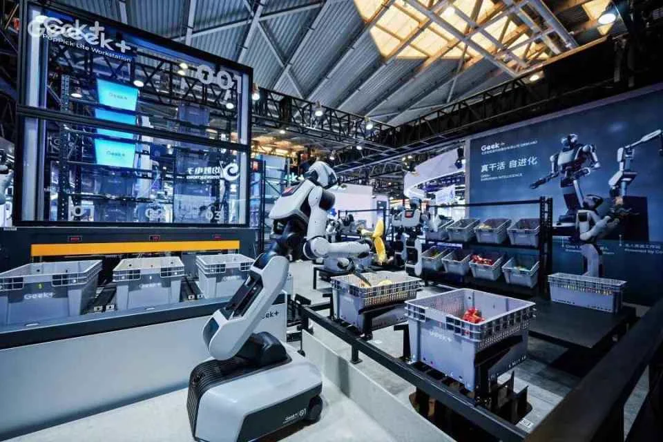
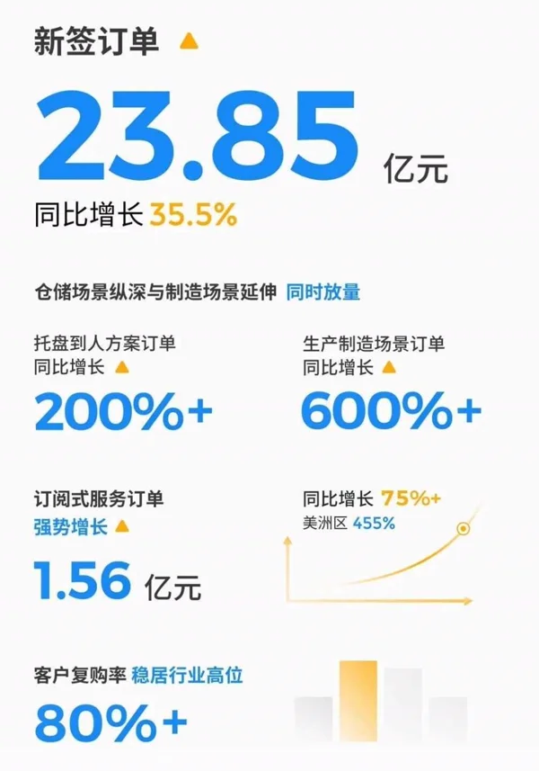

极智嘉北京极智嘉科技股份有限公司（Geek+，2590.HK）
全球仓储自主移动机器人（AMR）市场份额连续七年第一：已部署 8.1 万台机器人、服务 1,000 多家客户，海外收入占七成以上；2025 年港股上市，年收入超 30 亿元。2026 年推出轮式人形机器人 Gino 1 和 Gravity 具身模型，把仓库当作“物理 AI 训练场”。
一页结论
- 已跑通商业化的机器人公司：2026 上半年收入 12.84 亿元、毛利率 35.8%；剔除 4,450 万元具身智能研发投入后，经调整净亏损仅 1,610 万元，主业接近盈亏平衡S1S3
- 从卖设备到卖运营：订阅式服务订单 1.56 亿元，同比增长超 75%，美洲增长 455%；客户复购率超 80%S1S2
- 场景从仓到产：托盘到人订单增长超 200%，制造业场景订单增长超 600%S1S3
- 具身智能是第二曲线：2026-02 发布轮式双臂人形机器人 Gino 1，Q3 起逐步量产；WAIC 发布 Gravity 4D 具身模型；目标三年累计出货超 1 万台S2S4S5
- 数据飞轮优势：1,700 多个项目、百万级 SKU 的仓储拣选场景，被公司定位为“规模最大的物理 AI 训练场”S5
01公司介绍
| 项目 | 内容 |
|---|---|
| 公司 | 北京极智嘉科技股份有限公司，2015-03 创立，创始人郑勇（清华大学）；联合创始人陈曦负责具身智能S4S6 |
| 官网 | geekplus.com |
| 上市 | 2025-07-09 港交所主板上市，发行价 16.8 港元，募资总额约 27.1 亿港元（含超额配售），上市时市值超 218 亿港元S6 |
| 规模 | 业务覆盖 40 多个国家和地区，服务 1,000 多家终端客户，其中 85 家以上世界 500 强S2 |
| 行业地位 | 据 Interact Analysis，连续七年全球自主移动机器人市场份额第一S1S2 |
| 具身智能 | 2024 年成立具身智能研发团队，2025-07 成立具身智能子公司，子公司已启动外部融资S4 |

02公司战略
极智嘉的打法是“AMR 主业赚钱 + 订阅服务提高利润 + 具身智能打开上限”。
- 三大方向：AI 赋能的智能运营订阅服务、全场景产品创新、具身智能商业化落地S2
- 全场景产品矩阵：货架到人、托盘到人、货箱到人、机械臂拣选工作站、轮式人形机器人，共享技术底座与核心零部件S2S3
- 终极目标“全流程无人仓”：拣选全流程无人化后，下一步推进机械手打包S5
- 具身路线务实：先深耕物流与工业，再拓展零售、服务和家庭；选轮式和三指灵巧手，兼顾成本与投资回报S4
03产品定位与产品线
04主要功能与技术路线

05解决方案与场景
06商业模式
| 模式 | 说明 |
|---|---|
| 项目制销售 | 机器人 + 软件 + 系统集成，按项目交付S3 |
| 订阅式服务 | AI 智能运营订阅，高毛利、收入可重复S2 |
| 交叉销售 | 同一客户从仓储延伸到生产物流，复购率超 80%S2S3 |
| 具身智能 | Gino 1 与模型，目标三年累计出货超 1 万台；子公司独立融资S2S4 |

07上下游供应链与渠道
08主要客户与落地
09营收与财务
| 指标 | 数据 | 口径 |
|---|---|---|
| 2026 上半年毛利 | 4.60 亿元，毛利率 35.8%（上年同期 35.1%） | 中期公告S1 |
| 2026 上半年亏损 | 期内亏损 1.77 亿元；经调整净亏损 6,060 万元（同比收窄 32.1%） | 经调整为非国际财务报告准则口径S1S3 |
| 剔除具身研发 | 经调整净亏损 1,610 万元（具身研发投入 4,450 万元） | 公司口径S1S3 |
| 2025 年 | 收入 31.71 亿元；毛利率 35.5%；经调整净利润约 4,382 万元（上年经调整亏损 9,224 万元）；年内净亏损 1,040.7 万元（2024 年亏损 8.32 亿元）；经营现金流净额 8,566 万元；新签订单 41.37 亿元 | 2025 年度业绩，媒体报道S8S4 |
10落地痛点
11近期动态
12潜在风险分析意见
| 风险 | 表现 | 可能程度 |
|---|---|---|
| 海外依赖与贸易政策 | 海外收入超 75%（分析意见） | 中 |
| 具身投入拖累利润 | 具身研发是亏损扩大的主要原因之一S1 | 中 |
| AMR 价格竞争 | 国内仓储机器人厂商众多（分析意见） | 中 |
| Gino 1 量产与需求 | 人形机器人在仓库的投资回报待验证（分析意见） | 中 |
“可能程度”为基于现有公开信息的判断，不是量化预测。
13综合结论分析意见
优势
- 全球份额第一与 8.1 万台装机
- 海外高毛利市场
- 真实场景数据与客户网络
劣势
- 报表仍亏损
- 具身产品刚起步
机会
- 订阅服务提升利润
- 制造业物流
- 全流程无人仓
威胁
- 人形机器人公司切入仓储
- 国际贸易摩擦
对 AI 产品团队的启示
- 装机量是 AI 服务的入口：8.1 万台已部署机器人，让订阅制 AI 运营服务可以快速复制。
- 从已有场景长出具身智能：极智嘉不做通用演示，而是补齐无人仓剩下的拣选和打包环节。
- 形态和末端按 ROI 选：轮式 + 三指手，是成本、寿命与覆盖率之间的取舍。
- 把客户现场当训练场：真实、高频、反馈明确的场景，是具身模型最稀缺的数据来源。
信息缺口
以下信息未找到可靠的公开来源，本报告不做推测。
- Gino 1 售价与完整参数
- 具身智能子公司融资金额与估值
- 核心零部件外部供应商
- 订阅服务收入占比
来源
A 官方 · B 权威媒体或第三方 · C 社区（仅用于口碑与线索）。访问日期均为 2026-11-02。
- S1 · A截至 2026 年 6 月 30 日止六个月中期业绩公告极智嘉（港交所披露易） · 2026-08-28
- S2 · A极智嘉发布2026年中期业绩：订单增长35.5% 各业务线实现多点突破极智嘉（美通社） · 2026-09-02
- S3 · B极智嘉2026上半年多维增长势能凸显：订单高增35.5% 订阅式服务爆发智通财经（腾讯新闻） · 2026-08-31
- S4 · B极智嘉人形机器人Gino 1首秀 不卷“人形”卷“干活”上海证券报（同花顺转载） · 2026-07-20
- S5 · B极智嘉发布Gravity框架 人形机器人持续走向真实作业场科技日报（中国科技网） · 2026-07-24
- S6 · B极智嘉港交所上市报道澎湃新闻 · 2025-07-09
- S7 · BWAIC 2026唯一在流水线上“真干活”的人形机器人，背后是极智嘉Gravity 4D格隆汇 · 2026-07
- S8 · B极智嘉2025年财报：营收同比增31.6%达31.71亿元 经调整净利转正中证网 · 2026-03-31